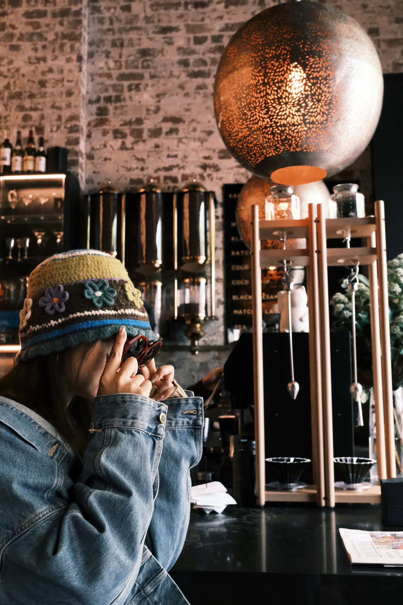
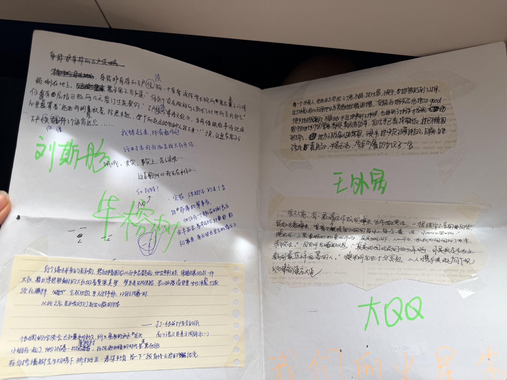
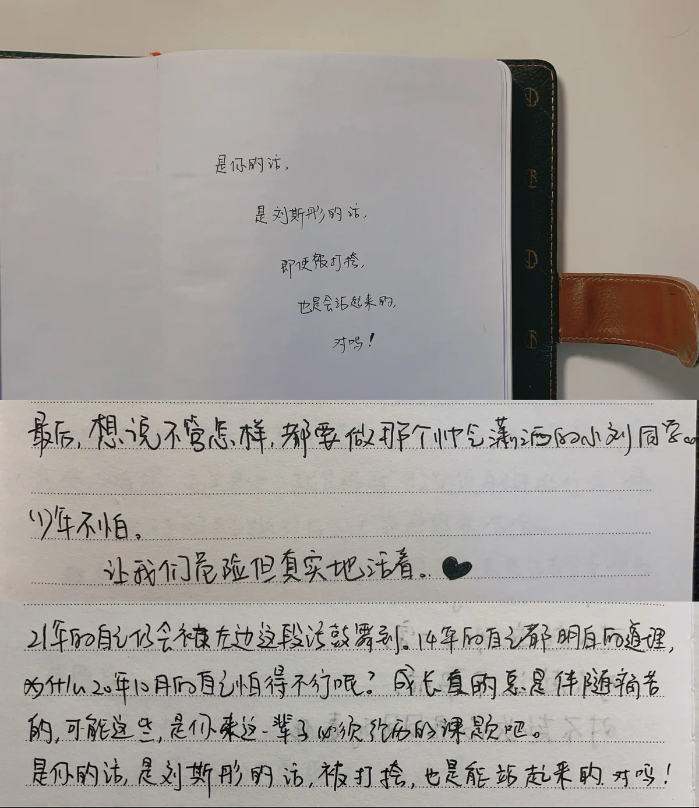
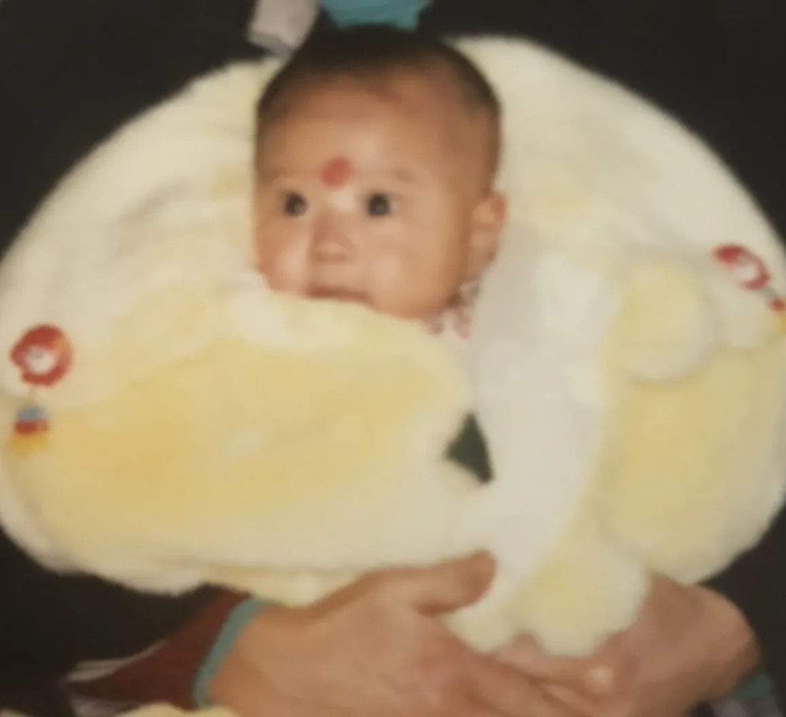

KANKAN, VOL.30 / CONTENTS
想认识我的话，
随便从一个地方进去。
04 PLACES / NO RECOMMENDED ORDER
01

FIRST IMPRESSION
CONTRADICTIONS
ALLOWED
02
/ KEPT FOR A REASON


THINGS WORTH
KEEPING
03
/ JOINTLY ISSUED
KANKAN OS v30.0
STATUS
VERIFIED
AI OFFICIAL RANKING™
KNOWN BUGS
17
UNEXPECTED FEATURES
???
EVIDENCE / 01
KANKAN
USER MANUAL
04

PLAYGROUND
DO NOT PRESS
入口已经开着。随便选。
SERIOUS MODE / SITONG LIU ↗
👀